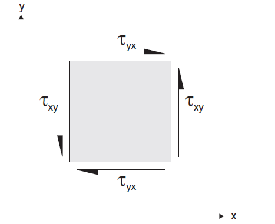
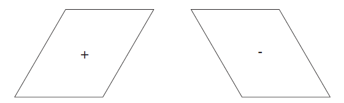

Sign Conventions
this page is based on the pfc version of the doc, with flac3d bits added to it.
The following sign conventions must be kept in mind when entering input or evaluating results.
- DIRECT STRESS
- Positive stresses indicate tension; negative stresses indicate compression.
- SHEAR STRESS
With reference to Figure 1, a positive shear stress points in the positive direction of the coordinate axis of the second subscript if it acts on a surface with an outward normal in the positive direction. Conversely, if the outward normal of the surface is in the negative direction, then the positive shear stress points in the negative direction of the coordinate axis of the second subscript. The stresses shown in Figure 1 are all positive. The stress tensor is symmetric (i.e., complementary shear stresses are equal).
Figure 1: Sign convention for positive stress components.
The distortion associated with positive and negative shear strain is illustrated in Figure 2.
Figure 2: Distortion associated with positive and negative shear strain.
- STRAIN RATE
- The convention for strain rate is analogous to that for stress.
- CONTACT FORCE
- Each contact-force vector can be resolved into normal and shear components with respect to the contact plane (see the “contact_resolution” section for further details). Normal contact forces act normal to the contact plane, while shear contact forces act in the contact plane. Positive normal contact forces indicate compression; negative normal contact forces indicate tension.
- CONTACT STRESS
- The contact force is divided by the area associated with the contact. The sign convention is the same as for the contact force.
- VECTOR QUANTITIES
- The \(x\)-, \(y\)-, and \(z\)-components of all vector quantities (e.g., forces, moments, displacements, and velocities) are positive when pointing in the directions of the positive global \(x\)-, \(y\)-, and \(z\)-coordinate space.
{kind=link}
{kind=link}
following material brought over from flac3d (and not found in pfc)
- DIRECT STRAIN
- Positive strain indicates extension; negative strain indicates compression.
- SHEAR STRAIN
- Shear strain follows the convention of shear stress (see above).
JOINT NORMAL STRESS — Joint normal stress is positive in compression.
JOINT NORMAL OPENING — Joint opening is positive; joint closure is negative.
JOINT SHEAR STRESS — Joint shear stress is positive for the following direction of relative movement:
Figure 3: Positive joint shear stress
JOINT SHEAR DISPLACEMENT — Joint shear displacement is positive for the following direction of relative movement:
Figure 4: Positive joint shear displacement
- PRESSURE
- A positive pressure will act normal to, and in a direction toward, the surface of a body (i.e., push). A negative pressure will act normal to, and in a direction away from, the surface of a body (i.e., pull). The next figure illustrates this convention:
Figure 5: Mechanical pressure: (a) positive; (b) negative
PORE PRESSURE — Fluid pore pressure is positive in compression. Negative pore pressure indicates fluid tension.
DIP, DIP DIRECTION — When dip and dip direction are used to specify joints in UDEC, the dip and dip direction are defined using a global right-handed \(xyz\)-axes system. When dip and dip direction are specified, UDEC assumes the following: +\(y\) points North (0 degrees azimuth); +\(x\) points East (+90 degrees azimuth); and +\(z\) points up. Dip direction is measured positive clockwise in the horizontal plane from North, which is at 0 degrees azimuth. Dip is measured positive down from the horizontal plane. This is not the same system that is normally used to specify coordinates in UDEC. Also the user is required to specify the orientation of the UDEC plane using the model orientation and origin commands.
VECTOR QUANTITIES — The \(x\)- and \(y\)-components of vector quantities such as forces, displacements, and velocities are positive when pointing in the directions of the \(x\)- and \(y\)-axes.
STRUCTURAL ELEMENTS Axial forces in beam elements are negative in compression. Shear forces in beam elements follow the opposite sign convention as that given for zone shear stress (illustrated in Figure 1). Axial forces in rockbolts and cable elements elements are negative in compression. Moments at the end of beam and rockbolt elements are positive in the counterclockwise direction.
Axial compression force in cables and rockbolts is (+) positive.
Translational displacements at nodes are positive in the direction of the positive coordinate axes, and angular displacements are positive in the counterclockwise direction.
The shear force and shear displacement at a cable/grout interface-spring node, or a rockbolt shear coupling-spring node, are positive if the node displacement is in the direction of the specification of the cable or rockbolt.
| Was this helpful? ... | UDEC © 2018, Itasca | Updated: Mar 15, 2024 |